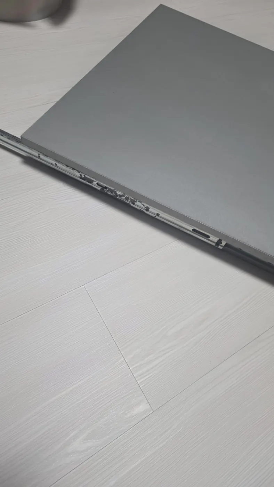
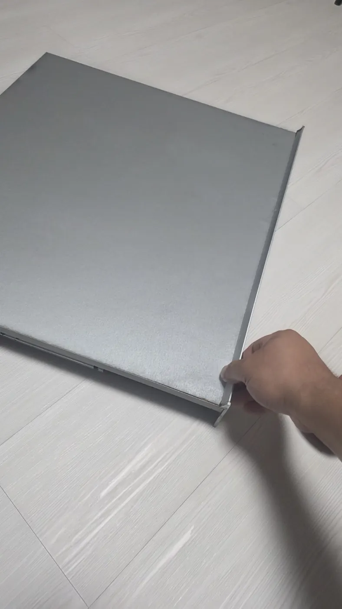
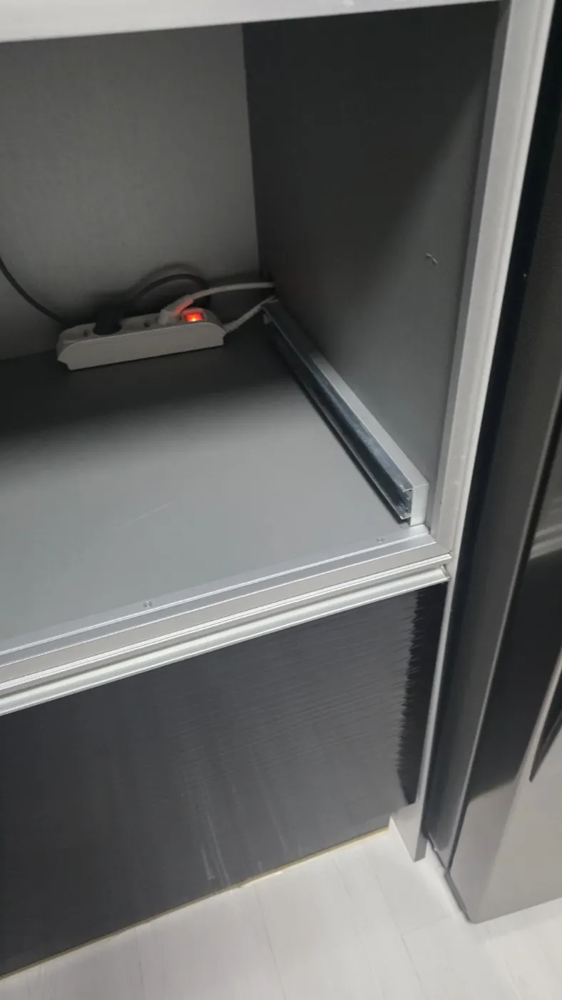
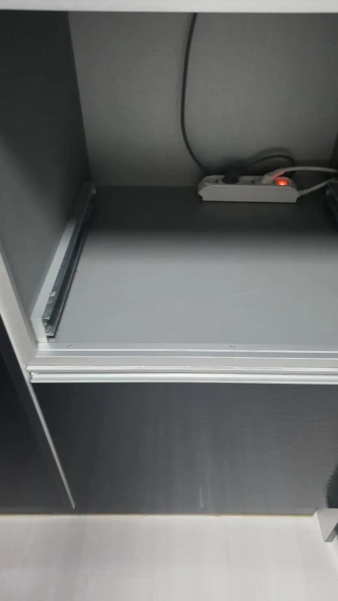
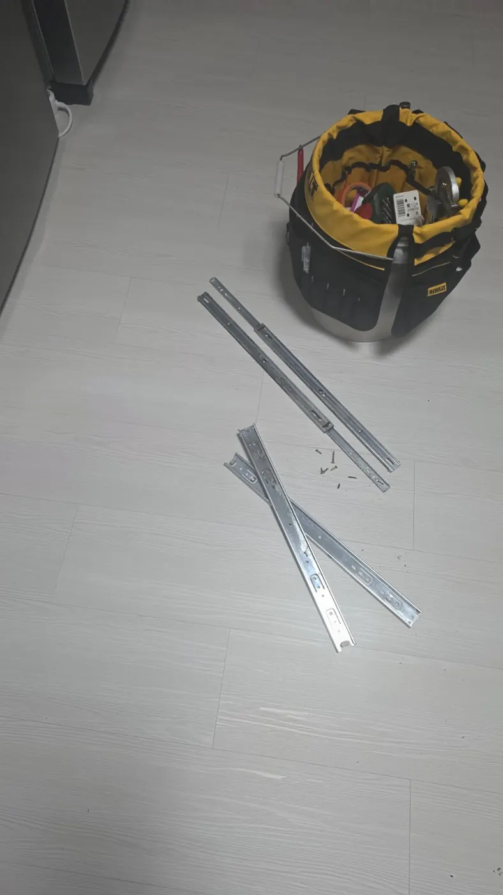

생활 수리
밥솥장 슬라이딩 레일 뻑뻑함｜볼베어링 파손 레일 교체
밥솥장 슬라이딩 선반이 뻑뻑해 점검한 결과 레일 볼베어링이 파손되어 레일을 교체했습니다.
현장 상황과 작업 과정
밥솥장 선반 움직임 불량
레일을 확인해 볼베어링 파손 상태를 점검했습니다.
파손된 레일을 새 부품으로 교체해 슬라이딩 기능을 복구했습니다.
실제 시공 사진





집수리대장 · 출장 집수리
우리 집 수리, 편하게 문의하세요!
현장 사진과 증상을 보내주시면 상담에 도움이 됩니다.